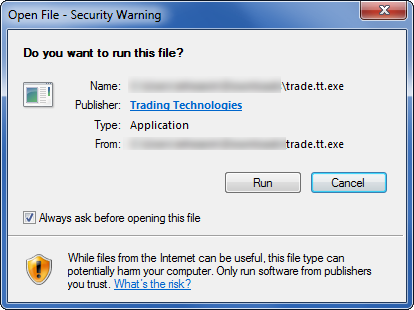
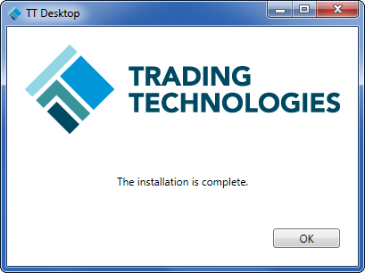

Installing TT Desktop
To install TT Desktop:
-
Navigate to the location of the trade.tt.exe file you downloaded.
-
Double-click the trade.tt.exe file.

-
Click OK to install TT Desktop. Then click OK when the installation completes.

After the installation process completes, Trading Technologies icon (
 ) is placed on your desktop.
) is placed on your desktop.